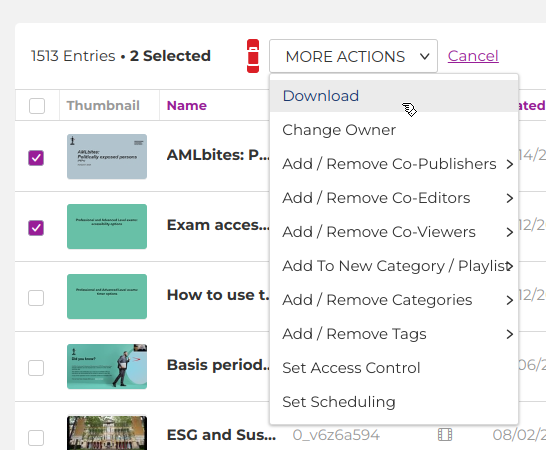
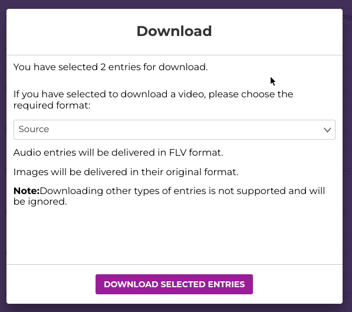
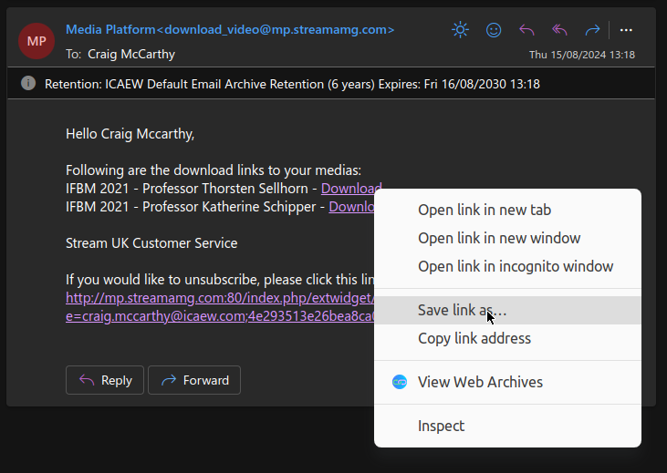
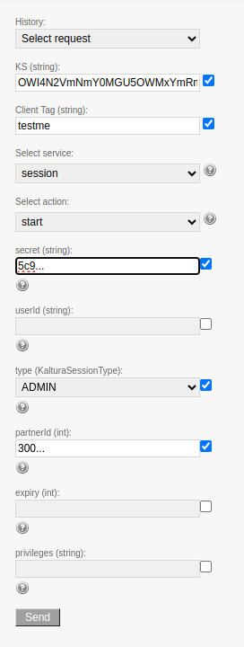
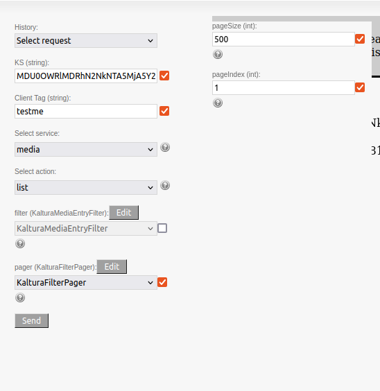
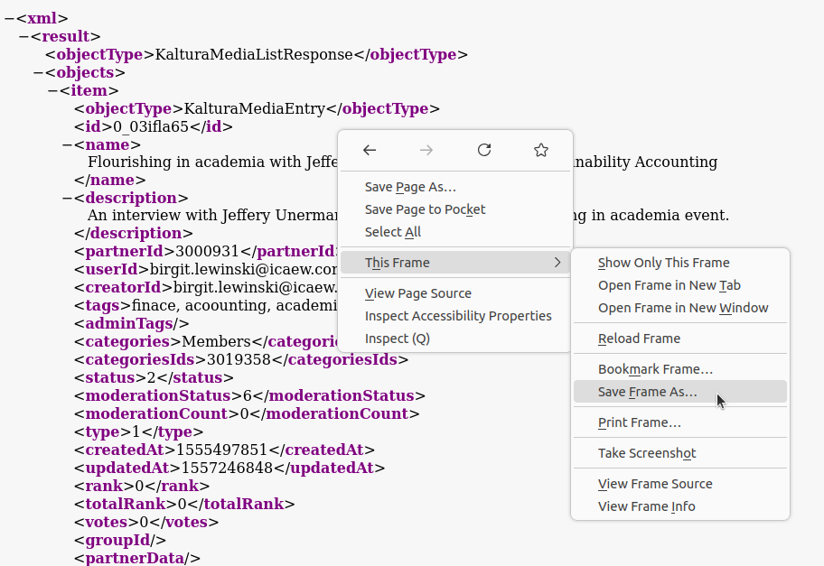

Downloading StreamAMG Videos
Purpose: This guide provides instructions for downloading videos from StreamAMG and exporting metadata in bulk.
Prerequisites
Required: - Access to KMC Management Console - StreamAMG API credentials - Python 3.x environment - Required Python packages installed
Access Requirements
Required: - Valid StreamAMG account with appropriate permissions - API access credentials (secret and partnerId) - Sufficient storage space for video downloads
Download Process
1. KMC Management Console Setup
Steps: 1. Log in to KMC Management Console 2. Navigate to Integration Settings 3. Note down your secret and partnerId
2. Video Download
Steps: 1. Access video library in KMC 2. Select videos for download 3. Use "MORE ACTIONS" → "Download" 4. Choose "Source" format 5. Save download link when received
3. Metadata Export
Purpose: The process uses the xml_to_csv.py script to process metadata.
Steps:
- Obtain API Session:
- Use API Test Console
- Select "session" service
- Choose "start" action
- Enter credentials
- Set type to "ADMIN"
-
Generate KS string
-
Retrieve Metadata:
- Select "media" service
- Choose "list" action
- Set pageSize to 500 (maximum)
- Increment pageIndex for multiple pages
-
Save XML output
-
Process Metadata:
python3 xml_to_csv.py --xml_file input.xml --csv_file output.csv
Quality Settings
Best Practices: - Download original source files - Preserve original metadata - Maintain video quality - Include all associated files
Error Handling
Common issues and solutions: 1. API Connection: - Verify credentials - Check network connection - Validate KS string
- Download Issues:
- Check storage space
- Verify file permissions
-
Monitor download progress
-
Metadata Processing:
- Validate XML structure
- Check CSV output
- Verify field mapping
Best Practices
- Always download source quality
- Keep original filenames
- Maintain metadata integrity
- Document any issues
- Test with single video first
- Verify downloads before processing
Support
For issues or questions, contact the Digital Archive team.
StreamAMG Video Downloads and Metadata Export Guide
Purpose: This guide provides clear, step-by-step instructions on how to download videos from StreamAMG and efficiently export metadata in bulk using StreamAMG's API and the xml-to-csv.py script.
Key Resources
Below are key links referenced throughout this guide:
Part 1: Downloading Videos from StreamAMG
Follow the steps below to download videos from StreamAMG:
1. Log in to the KMC Management Console
- Access the KMC Management Console and log in with your credentials.
2. Navigate to the Video Library
- Once logged in, go to the video library and select the videos you wish to download.
3. Initiate the Download
- With your videos selected, click on the "MORE ACTIONS" dropdown menu and choose the "Download" option.

4. Choose the Download Format
- In the download options, select "Source" to download the original video file.

5. Complete the Download
- You will receive an email with a download link. Right-click on the link and select "Save link as..." to save the file to your local device.

Part 2: Exporting StreamAMG Metadata
Tip: For best results, use Firefox for this process. The XML output might not render correctly in Chrome.
This process involves using the API Test Console and the xml-to-csv.py script.
1. Obtain a "KS" String
- Open the API Test Console.
- From the "Select service" dropdown, choose "session".
- From the "Select action" dropdown, choose "start".
- Enter your "secret" and "partnerId" (these can be found in the Integration Settings in the KMC Management Console).
- Set the "type (KalturaSessionType)" to "ADMIN".
- Click "Submit" to generate a "KS" string, which will be used in the following steps.

2. Retrieve Metadata
- In the same API Test Console session, select "media" from the "Select service" dropdown and "list" from the "Select action" dropdown.
- Tick and edit the "pager (KalturaFilterPager)".
- Enter "500" in the "pageSize" (this is the maximum allowed).
- Enter "1" in the "pageIndex" for the first page of results. For subsequent pages, increment this number (e.g., 2, 3, 4).

3. Save the Metadata XML
- The results will appear as an XML file. Right-click within the frame containing the XML, select "This Frame," and then choose "Save Frame As..." to save the XML file.
- Repeat this process for each subsequent page of metadata.

4. Convert XML to CSV
- Once you have saved the XML files, use the xml-to-csv.py script to convert them to CSV format.
- The script requires specifying an
xml_fileas input and acsv_fileas output.